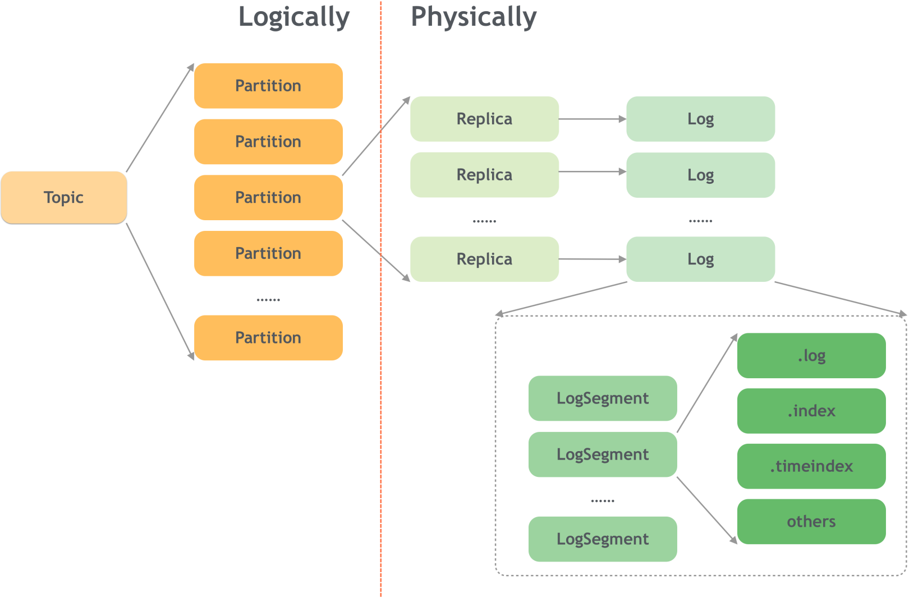
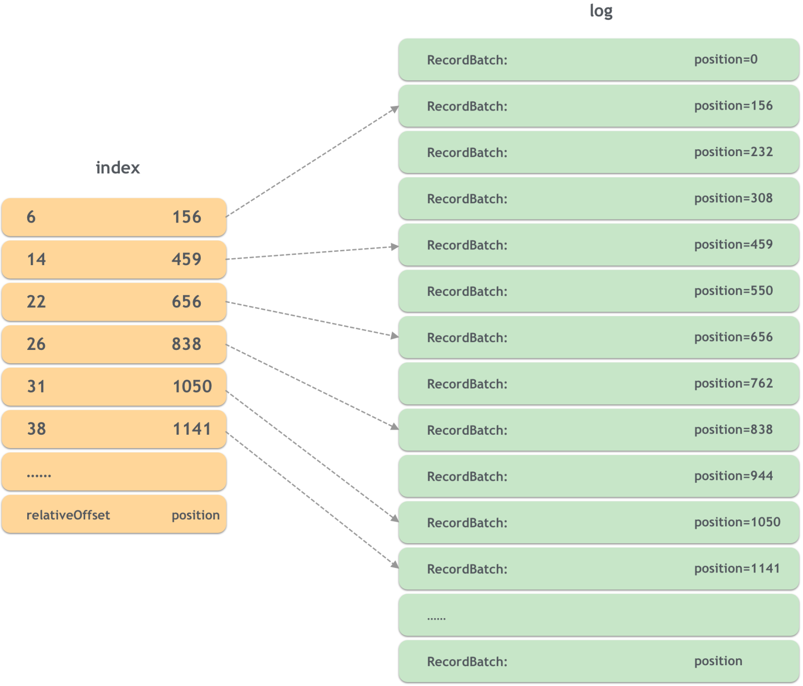
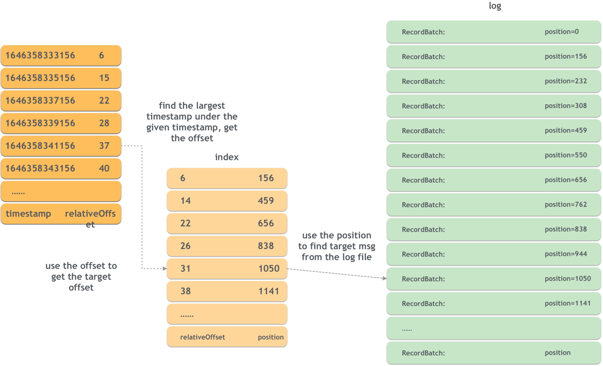
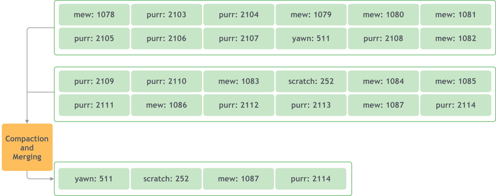

Ch03-Kafka 之消息存储
June 25, 2018
Kafka 生产者和消费者工作流程比较复杂，需要各个组件参与才能完成。
1. 日志存储 #
Kafka 中的消息在每个 Partition 中是以分段的形式进行存储的，即每 1GB 消息新建一个 Segment，每个 Segment 包含两个文件：.log 文件和.index 文件。.log 文件就是 Kafka 实际存储 Producer 生产的消息，而 .index 文件采用稀疏索引的方式存储 .log 文件中对应消息的逻辑编号（offset）和物理偏移地址（position），以便于加快数据的查询速度。.log 文件和.index 文件是一一对应，成对出现的。下图展示了.log 文件和.index 文件在 Partition 中的存在方式。

2. 日志索引 #
日志追加提高了写的性能，但是对于读就不是很友好了。为了提高读的性能，就需要降低一点写的性能，在读写之间做一点平衡。也就是在写的时候维护一个索引。kafka 维护了两种索引：偏移量索引和时间戳索引。
2.1 偏移量索引 #
为了能够快速定位给定消息在日志文件中的位置，一个简单的办法就是维护一个映射，key 就是消息的偏移量，value 就是在日志文件中的偏移量，这样只需要一次文件读取就可以找到对应的消息了。 不过当消息量巨大的时候这个映射也会变很大，kafka 维护的是一个稀疏索引（sparse index），即不是所有的消息都有一个对应的位置，对于没有位置映射的消息来说，一个二分查找就可以解决了。

比如要找 offset 是 37 的消息所在的位置，先看索引中没有对应的记录，先找到不大于 37 的最大 offset 是 31，然后在日志中从 1050 开始按序查找 37 的消息。
2.2 时间戳索引 #
时间戳索引就是可以根据时间戳找到对应的偏移量。时间戳索引是一个二级索引，现根据时间戳找到偏移量，然后就可以使用偏移量索引找到对应的消息位置了。

3. 日志压缩 #
日志压缩针对的是 key，具有相同 key 的多个 value 值只保留最近的一个。同时，日志压缩会产生小文件，为了避免小文件过多，kafka 在清理的时候还会对其进行合并。

4. 日志删除 #
日志删除策略有过期时间和日志大小。默认保留时间是 7 天，默认大小是 1GB。 虽然默认保留时间是 7 天，但是也有可能保留时间更长。因为当前活跃的日志分段是不会删除的，如果数据量很少，当前活跃日志分段一直没能继续拆分，那么就不会删除。Kafka 会有一个任务周期性地执行，对满足删除条件的日志进行删除。